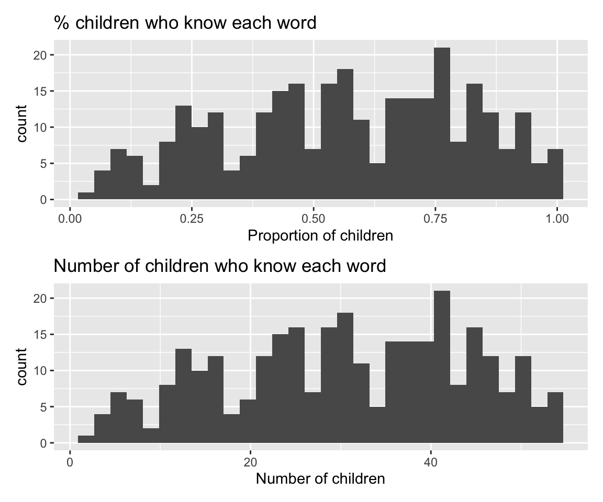
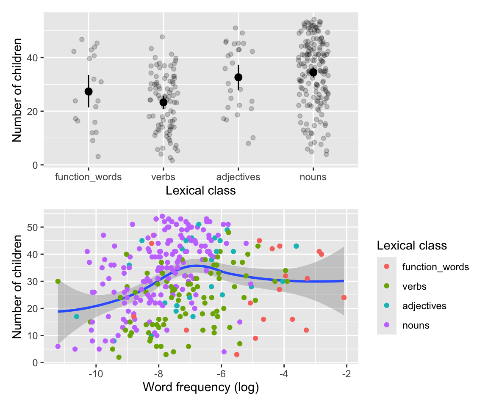
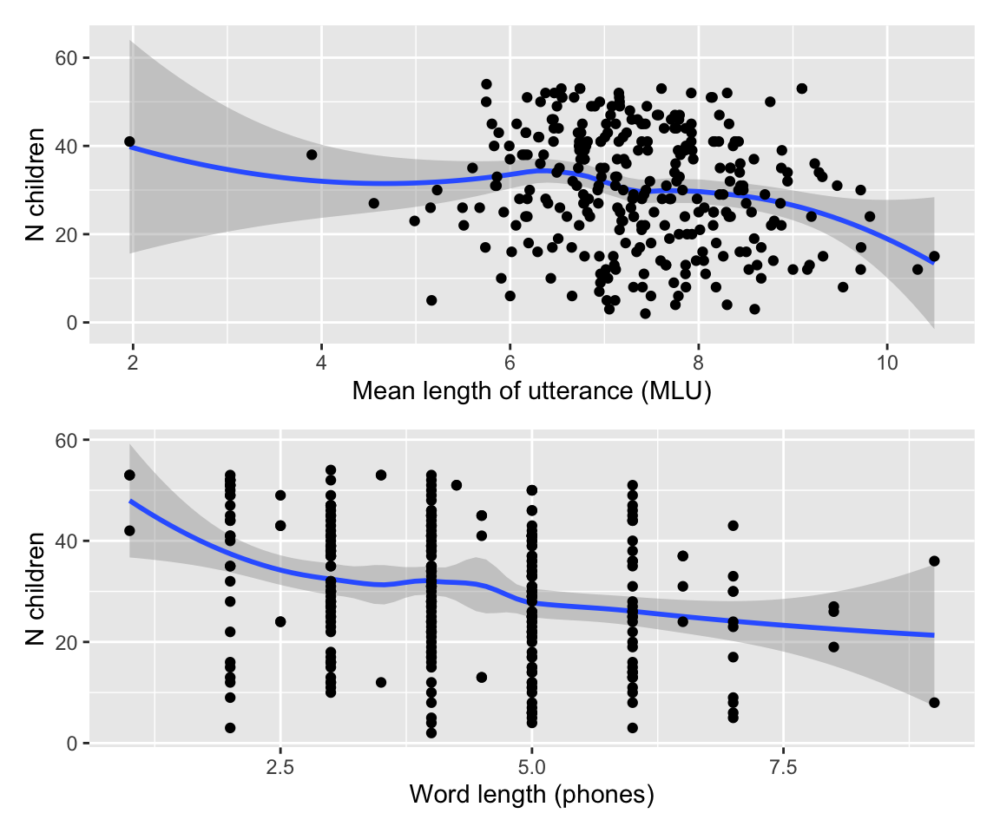
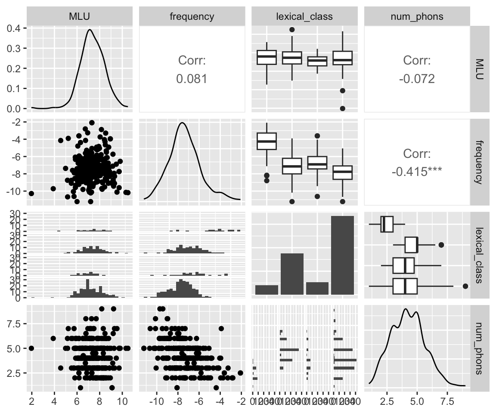

library(tidyverse)
library(GGally)
library(Hmisc)
library(patchwork)14 Homework 1
14.1 Preliminaries
Libraries we’ll need:
Load data:
# change path for your system
wordbank_data <- read.csv(file = "../../data/wordbank_data_hw1.csv")
# In F2024: this data should be at
# people.linguistics.mcgill.ca/~morgan/ling683-f2024/wordbank_data_hw1.csvThis data comes from Wordbank, an open database of children’s vocabulary growth which aggregates data from thousands of parent-report questionnaires on lexical acquisition—the MacArthur Bates Communicative Development Inventory (CDI)—across many languages. Frank et al. (2021) (ebook) describes this remarkable resource in more detail.
For our purposes we are using data from Braginsky et al. (2019) (paper), which covers:
- Children learning one of 8 languages
- For 664 words (the “WS” list).1
We will just consider data aggregated across children, restricted to children aged 24 months, to be able to apply models we’ve learned about so far (i.e., no grouping structure).
Relevant columns:
language: language Xdefinition: the word, in language Xuni_lemma: the word’s gloss in Englishnum_true: number of children aged 24 months who are reported to be able to produce this word.num_false: same for “not able to produce”- Thus, there are
num_true+num_falsechildren for language X. This number is the same for every word within a given language.
- Thus, there are
prop: num_true/(num_true+num_false)- Structural properties:
lexical_class: broad syntactic categorynum_phons: length of word, in phones
- Measures of environmental input
frequency: Word’s frequency (in CHILDES)MLU: mean length of utterance (in CHILDES)—proxy for syntactic complexity
- Meaning-based properties:
valence,concreteness,arousal
If you’d like more detail, Chap. 10 of Frank et al. (2021) discusses most of the word properties. The French CDI data discussed below is explored and modeled using frequentist methods in Chapters 7 and 9 ofRMLD (Sonderegger 2023).
14.2 Introduction
Our research questions in this homework are:
- How does lexical class affect when words are acquired? - Of particular interest are noun word bias and function word bias, which are hypothesized to be consistent across languages (nouns/function words acquired earliest/latest, on average) - See Sec. 7.1.2 of RMLD for context, and see Ch.11 of Frank et al. (2021) for more detail.2
- How does environmental input affect when words are acquired? - In particular:
frequencyandMLU
num_phons must also be considered, as it is correlated with other predictors, but it is not otherwise of direct interest.
14.2.1 Example: Quebec French
To motivate, I will use just data from Quebec French. In this homework we will use “number of kids reported to know the word at 24 months” as a proxy for “when words are acquired”.
data_fr <- filter(wordbank_data, language == "French (Quebec)")Preprocessing: get rid of ‘other’ lexical category, reorder lexical_class to the theoretically-expected order, and remove rows for which predictors of interest aren’t defined:
data_fr <- data_fr %>%
filter(lexical_class != "other") %>%
mutate(lexical_class = fct_relevel(lexical_class, "function_words", "verbs", "adjectives", "nouns")) %>%
droplevels() %>%
filter(!is.na(lexical_class) & !is.na(frequency) & !is.na(MLU) & !is.na(num_phons))Some empirical plots:
Code
# fraction of kids who know each word (num_true / (num_true + num_false))
emp_plot_1 <- data_fr %>% ggplot(aes(x = prop)) +
geom_histogram() +
xlab("Proportion of children") +
ggtitle("% children who know each word")
# words range from 0% to near-100% known
# plotted as num_true
emp_plot_2 <- data_fr %>% ggplot(aes(x = num_true)) +
geom_histogram() +
xlab("Number of children") +
ggtitle("Number of children who know each word")
emp_plot_1 / emp_plot_2
## `stat_bin()` using `bins = 30`. Pick better value with `binwidth`.
## `stat_bin()` using `bins = 30`. Pick better value with `binwidth`.
Lexical class and frequency:
Code
lex_class_plot_1 <- data_fr %>% ggplot(aes(x = lexical_class, y = num_true)) +
stat_summary(fun.data = "mean_cl_boot") +
geom_jitter(alpha = 0.2, width = 0.2) +
labs(y = "Number of children", x = "Lexical class")
lex_class_plot_2 <- data_fr %>% ggplot(aes(x = frequency, y = num_true)) +
geom_smooth() +
geom_point(aes(color = lexical_class)) +
labs(x = "Word frequency (log)", y = "Number of children", color = "Lexical class")
lex_class_plot_1 / lex_class_plot_2
## `geom_smooth()` using method = 'loess' and formula = 'y ~ x'
MLU and word length:
Code
mlu_plot <- data_fr %>%
ggplot(aes(x = MLU, y = num_true)) +
geom_smooth() +
geom_point() +
labs(x = "Mean length of utterance (MLU)", y = "N children")
num_phons_plot <- data_fr %>%
ggplot(aes(x = num_phons, y = num_true)) +
geom_smooth() +
geom_point() +
labs(x = "Word length (phones)", y = "N children")
mlu_plot / num_phons_plot
## `geom_smooth()` using method = 'loess' and formula = 'y ~ x'
## `geom_smooth()` using method = 'loess' and formula = 'y ~ x'
Note that these predictors are somewhat correlated:
data_fr %>%
dplyr::select(MLU, frequency, lexical_class, num_phons) %>%
ggpairs()
Especially important, given RQ1, is the relationship between lexical_class and frequency (function words have higher frequency), which presumably exists across languages.
Your goal is to fit a reasonable model addressing RQs 1–2, step by step, for one of the 8 languages:
unique(wordbank_data$language)
## [1] "Croatian" "Danish" "English (American)"
## [4] "French (Quebec)" "Italian" "Norwegian"
## [7] "Russian" "Spanish (Mexican)" "Turkish"14.2.2 Domain knowledge
To interpret your results, and to choose weakly informative priors, you’ll need to know a bit about lexical acquisition. You can assume that:
- There is a lot of variability in which words kids know, and how many kids know a given word, at age 24 months, even after accounting for all known predictors
- Thus, the effect of any individual predictor \(x\) may be large, but not giant (e.g. predicting 95% vs 5% of kids as \(x\) is changed).
- In many (but not all) languages, on average:
- Nouns are acquired earlier than predicates (verbs, adjectives)
- Function words are acquired later than predicates.
- More frequent words are acquired earlier.
This tells us what directions are expected for frequency and lexical_class. For the other predictors, we might expect words with higher MLU (proxy for syntactic complexity), or longer words (num_phons) to be acquired later.
These are all violable expectations. Our priors might capture something about expected direction, but should not rule out any effect (e.g. by saying frequency must have a positive effect).
14.2.3 This assignment
Please choose one language per student, coordinating with each other (e.g. on Piazza) to make sure you all have different languages.
You can model \(y\) = num_true using any of the following models, none of which is quite right for this data (but are fine for this homework):
- Linear regression
- (But:
num_trueare counts)
- (But:
- Poisson regression or negative binomial regression
- (But:
num_trueis bounded, bynum_true + num_false)
- (But:
- Binomial regression, using
num_true/num_falseas successes/failures- This would be most appropriate, but we have not directly covered it in class.
- Interpretation of coefficients similar to logistic regression.
- Risks overdispersion, similarly to Poisson regression.
Choose one model type, by whatever criterion you wish, and assume this kind of model in answering the questions below. You can answer questions by just writing code chunks and text directly into the .qmd file. You should submit:
- Your final
.qmdfile - A compiled version, as PDF or HTML.
You are encouraged to work together (though this is not required), but you must write up your code and (prose) results independently, for your own language. See the syllabus for the Generative AI policy.
14.2.4 Tips
The main issues students have had with this homework / areas to focus on:
- Correct application and interpretation of contrasts for
lexical_class.- You’ll need to use a “centered” contrast coding scheme.
- Don’t interpret factor levels (e.g.
lexical_class1= nouns) instead of contrasts. - Review Chapter 7 of RMLD if needed for contrast coding and related topics like post-hoc tests.
- You’ll need to use a “centered” contrast coding scheme.
- Include and properly justify prior parameters.
- There are examples of such justification in the lecture notes and readings.
- A prior predictive checks is required.
- Include and interpret posterior predictive checks
14.3 Question 1: Preliminaries
Restrict to data just for your language, and do preprocessing (the “Preprocessing” step done for French above).
(a). Make 3-4 empirical plots exploring the effects of predictors of interest. Briefly discuss the patterns you see (a few sentences).
- These do not need to be the plots I made for French, which are not necessarily the best ones for your language. Your plots should be chosen to illustrate the main empirical patterns in you language. (Also, your plots should be better-looking and have proper axis labels, etc.)
- Make sure you use
geom_smooth()for continuous variables, to detect possible nonlinear effects.
(b). Standardize the predictors. This means minimally using a “centered” contrast coding scheme for lexical_class, and centering the other predictors.
14.4 Question 2: choosing priors
You will fit a first regression model, of num_true (using your chosen model class), as a function of these predictors (no interactions or nonlinear terms): frequency, MLU, num_phons, lexical_class
(a). Name the parameters of your model, giving the interpretation of each one. (Ex: for a linear regression, there would be one intercept, four \(\beta\) coefficients and one \(\sigma\) variance parameter.)
(b). Choose a “weakly informative” prior for each term, giving brief motivation for each, and performing at least one prior predictive check (e.g. for the lexical_class or frequency effect)—you don’t need to do this for each parameter.
Remember that:
- Your reasoning can include domain knowledge, the range of \(y\), and sanity checks.
- Your reasoning should not include actually looking at patterns in the empirical data (such as the direction of the
frequencyeffect)!
You should describe each prior in words or an equation, but not in brms model format (yet).
NB: your prior for lexical_class does not need to capture any expectation about the order of levels (like that nouns \(>\) predicates). You are welcome to do this, but it’s not required (and is not trivial).
14.5 Question 3: fitting a first model
Specify and fit your model, using brms.
Examine MCMC diagnostics to convince yourself the model fit properly, and change any necessary fitting parameter if it did not. You only need to include a brief summary of this in your writeup and it won’t be directly graded. (You could examine trace plots, Rhat values, posterior histograms, etc.)
(a). Once you have a satisfactory fit, summarize the model’s results:
- Visually: By making partial effect plots, illustrating the effect of each predictor as others are held constant.
- Quantitatively: By discussing the estimates for
frequency,MLU, andnum_phons, and showing appropriate post-hoc comparisons (pairwise is fine) for the effect oflexical_class.- Your discussion should include: the 95% CI, and/or both “existence” (like \(p_{d}\)) and “significance” metrics (like ROPE). In other words, you must meaningfully discuss both the existence and importance of effects. Your discussion should not include any hard cutoffs, like \(p_d > 0.95\).
The “quantitatively” part should be about a paragraph, or a table plus a shorter paragraph. NB: Part of the assignment is to find examples/guidance for how to report results of a Bayesian regression model.
(b). Critique the model:
- Perform at least two posterior predictive checks (show the plots).
- Does it suggest anything about how well the model fits, and what might need to be changed about it?
14.6 Question 4: the frequency-lexical_class relationship
Intuitively, there are two conflicting expectations:3
- Higher-frequency words should be known by more children
- Function words should be known by fewer children
The conflict arises because function words will have higher frequency (on average) than words of other lexical_class values. The goal here is to determine whether, and how, your model has captured this aspect of the data.
(a). What two (or more) quantities predicted by the model should be related, which would reflect this conflict? Explain your reasoning.4
Your answer might involve two observations (e.g. “\(y\) for nouns, with other predictors held constant), or model parameters (e.g. ”\(\beta_{frequency}\)“) or functions of model parameters.
(b). Call these two quantities \(x_1\) and \(x_2\). Sample from a posterior distribution over each one (using e.g. 1000 samples from the posterior). This should result in a data frame with 1000 rows, and (at least) two columns—one for \(x_1\) and one for \(x_2\).
(c). Make a plot, using these values, which addresses how/whether your model captures the conflict above. Explain.
14.7 Question 5: a second model
An empirical plot of frequency vs. the dependent variable, for your language, should suggest a possibly nonlinear effect. (As in the French example above.) You may have also found other evidence suggesting this (or not).
(a). What range of degrees of nonlinear effect of frequency—whether fit with (orthogonal) polynomials or splines—seems possible here?5
(b). Fit 2 or more additional models capturing these possible nonlinear effects. (If you flagged any simple issue to be changed in 3(b), you could also make this change in these models.) Compare all models fitted—these additional models, as well as Model 1 above—using an appropriate quantitative metric, to choose a “best” model.
The “Examine MCMC diagnostics….” paragraph above applies here as well.
(c). Plot the partial effects of frequency and lexical_class for this new model. How have your conclusions about the effect of each predictor changed from above, if at all? Can you explain why?
(d). Optional: repeat 4(a)–(c) for this new model.
For McGill students: we used this data in LING 620, so this should be review.↩︎
Contact me if these are not borne out in the empirical data for your language.↩︎
Hint: One quantity might reflect function words relative to other lexical classes.↩︎
Note that you don’t need to try nonlinear effects of other predictors—though you’re welcome to do so, with justification.↩︎